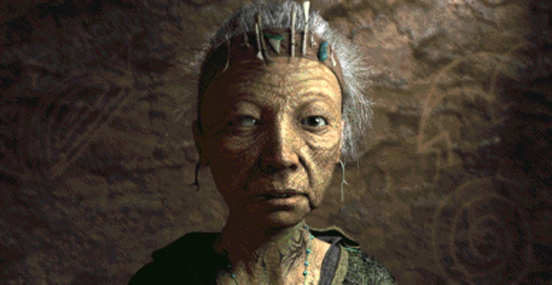
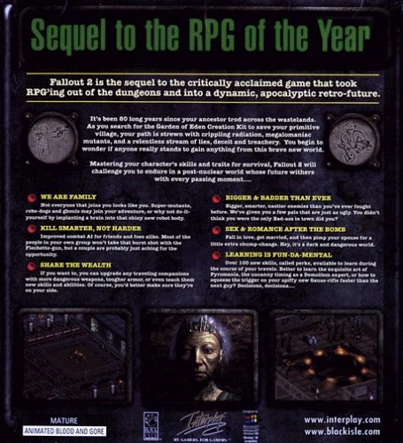
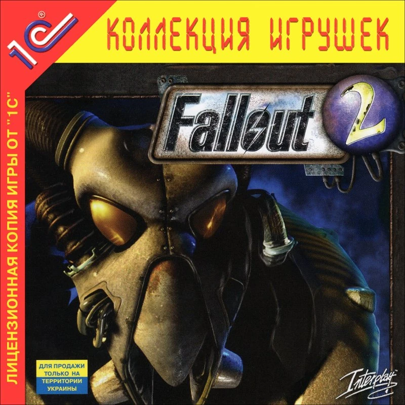
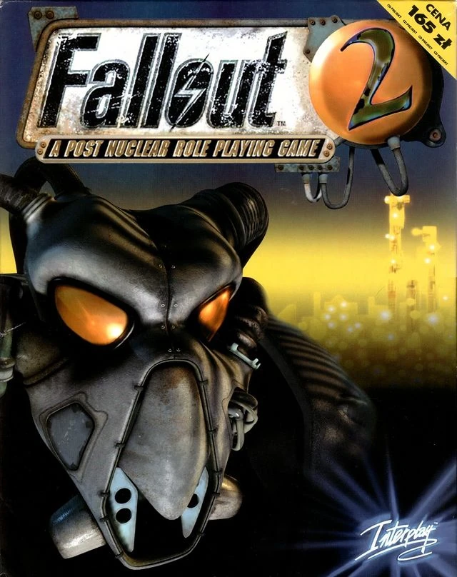
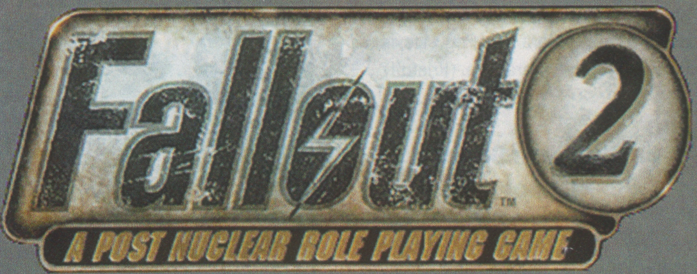
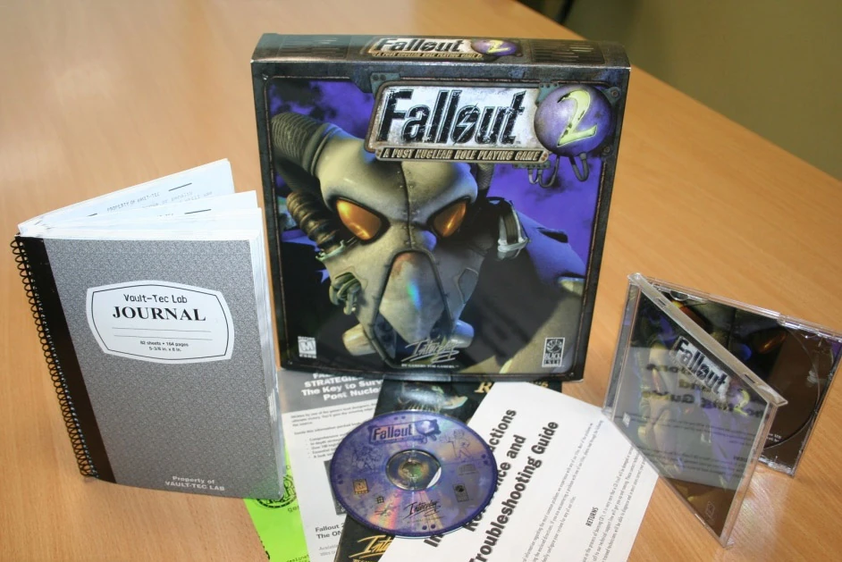
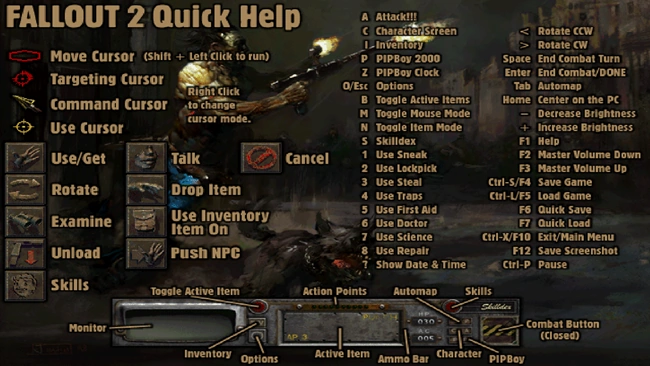
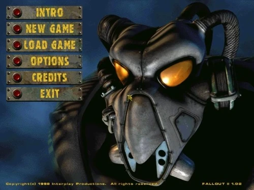

Fallout 2
A Post Nuclear Role Playing Game
「そしてアロヨは建設以来、一世代にわたって平和のうちに暮らしてきた。
渓谷がその地を外の世界から守っていた。
そこはふるさと。あなたのふるさとだ。
しかし戦争が残した傷はまだ癒えていない。
そして大地は忘れてはいないのだ。」 — ナレーター、Fallout 2イントロより
概要
Fallout 2: A Post Nuclear Role Playing Gameは、初代Falloutの続編である。
1998年秋にPC専用として発売され、Black Isle Studios（Interplay Entertainmentの開発部門）が開発した。
物語は初代Falloutから約80年後の2241年が舞台。
部族の村アロヨの住人であり、初代の主人公Vault Dwellerの孫にあたるChosen One（選ばれし者）が、村の飢餓と干ばつに対抗できるとされるデバイス「G.E.C.K.（エデンの園創造キット）」を見つける任務を課される。
ゲームプレイ
Fallout 2のゲームプレイは初代Falloutと同様で、ターン制の戦闘と擬似等角投影ビューを持つCRPGである。
キャラクター作成と成長
プレイヤーキャラクターには基本ステータス、特性、スキル、Perkが設定されている。
初期ステータスはキャラクター作成時に選択し、アクションの成功で経験値が付与され、レベルアップ時にスキルポイントの配分とPerkの選択が行われる。
S.P.E.C.I.A.L.
Fallout 2も初代と同様にS.P.E.C.I.A.L.システムを採用。
Strength、Perception、Endurance、Charisma、Intelligence、Agility、Luckの7つの基本属性がキャラクターのスキルとPerkを決定する。
スキル
ゲームには18種類のスキルが存在し、0%から300%までランク付けされている（初代は200%まで）。
レベルアップごとにスキルポイント（5 + 知力×2）が付与される。
プレイヤーは3つのスキルを「タグ」でき、Tag! Perkで4つ目のタグも可能。
| 分類 | スキル |
|---|---|
| 戦闘スキル（6種） | Small Guns、Big Guns、Energy Weapons、Unarmed、Melee Weapons、Throwing |
| アクティブスキル（8種） | First Aid、Doctor、Sneak、Lockpick、Steal、Traps、Science、Repair |
| パッシブスキル（4種） | Speech、Barter、Gambling、Outdoorsman |
戦闘スキルは対応する武器の命中率とダメージを向上させる。
アクティブスキルはプレイヤー・NPC・環境に対して使用でき、ダイアログにも貢献する。
パッシブスキルはダイアログやゲーム内の各種イベントに影響するが、直接使用はできない。
書籍はSmall Guns、First Aid、Science、Repair、Outdoorsmanのスキルをスキル値91%まで向上させることができる。
Vault Cityとサンフランシスコが書籍の良い入手先。
スキルが100%を超えると、1%上げるのに必要なポイントが増加し、200%以降は1%あたり6ポイント（タグ済みなら2%）が必要になる。
特性とPerk
キャラクター作成時に2つのオプション特性を選択可能。
特性は通常1つの有益な効果と1つの不利な効果を含み、一度選択すると変更不可（Mutate! Perkで1回だけ変更可）。
Perkは3レベルごと（Skilled特性選択時は4レベルごと）に取得でき、通常のプレイでは得られない特殊効果を付与する。
初代Falloutからの変更点
アイテム・武器・敵
初代よりもはるかに多種多様なアイテム、武器、アーマーが登場。
初代の武器には代替型やアップグレード型が追加された（例：ミニガンにAvenger、Vindicatorが追加）。
店頭でのアイテム価格が上昇し、スカベンジングがより重要に。
すべての戦闘分野に新武器が導入され、どの戦闘スキルでも強力になれるバランスに。
スキルの変化
スキルの初期値が初代より低く設定され、以前はあまり使われなかったUnarmed、Doctor、Trapsなどもすべて有用になった。
スキル上限が200%から300%に引き上げられ、100%以降はポイントコストが増加する段階的な仕組みに。
Unarmedスキルは属性とスキルレベルに応じて異なるパンチやキックが使えるようになり、大幅に洗練された。
初代のFriendly Foe Perkはデフォルト機能に。
カルマとレピュテーション
カルマに加えてレピュテーション（評判）システムが追加。
カルマはプレイヤー全体に影響するが、レピュテーションは各町でのプレイヤーの受け入れ方に影響する。
行動に応じて「ジゴロ」「メイドマン」「スレイバー」などの称号を獲得でき、ゲームの展開やNPCの反応が変化する。
仲間NPC
初代では仲間NPCの操作は非常にシンプルだったが、Fallout 2では大幅に進化。
NPCはレベルアップし、アーマーを装備でき、戦闘前および戦闘中に命令を出せるようになった（撤退タイミング、自己回復、武器の収納など）。
個性的なバックストーリーを持ち、カルマが低いと加入を拒否するNPCや、特定のクエスト完了が条件のNPCも存在する。
リクルート可能な人数にはカリスマに基づく上限があり、12名以上のNPCをリクルート可能。
クエスト構造
初代ではサイドクエストはほぼ各集落内で完結していたが、Fallout 2では集落同士が密接に繋がり、一つの都市での行動が他の都市に影響する。
サイドクエストは複数のロケーション間を往復する必要があることが多い。
成熟したテーマ
ゲーム全体の題材はより成熟し、薬物と売春が設定の主要な要素に。
マフィアへの加入、ポルノスター、結婚と離婚、性的なテーマが頻繁に登場。
奴隷制も重要なサブプロットとなり、奴隷商（スレイバーズ・ギルド）側につくか、その反対勢力（ニュー・カリフォルニア・レンジャーズ）に加わるかを選択できる。
ストーリー

村の長老がChosen OneにG.E.C.K.探索の任務を与える
初代Falloutの結末で、英雄Vault Dwellerは監督官によって追放された。
ウエイストランドでの経験が彼を変えてしまい、Vault社会に再統合できないと判断されたためである。
故郷に戻れなくなったVault Dwellerは、志を共にする仲間たちと共に北へ旅立ち、2170年代後半にニュー・カリフォルニア北部に「アロヨ」という部族の村を建設した。
それから数十年。
Vault Dwellerは別の元Vault住人「パット」と結婚して子を設け、その子はやがて村の長老となった。
Vault Dwellerは2208年に回顧録を残してアロヨを去った。
Vault Dwellerの追放以来、新たな政府ニュー・カリフォルニア共和国（NCR）が南部の居住地を統一し始めていた。
エンクレイヴという謎の組織が、ブラザーフッド・オブ・スティールをも凌ぐ最先端技術で台頭。
遺伝的に純粋な人間で構成された孤立したハイテク居住地Vault Cityが交易を開始。
犯罪ファミリーが支配する悪徳の街ニュー・リノが、新しい強力な中毒性ドラッグ「ジェット」を流通させて政治を操り始めていた。
2241年、アロヨは記録上最悪の干ばつに見舞われた。
村の長老はVault Dwellerの直系の子孫「Chosen One（選ばれし者）」に、G.E.C.K.を取得する任務を課す。
G.E.C.K.はポストアポカリプスのウエイストランドから繁栄するコミュニティを創り出せるデバイスで、Vault 13（村人には「聖なる13のVault」として知られる）に保管されているとされていた。
Chosen Oneは2241年7月25日、Vault Dwellerのジャンプスーツ、Pip-Boy 2000、Vault 13の水筒、槍、そしてわずかな現金だけを持って旅立つ。
長く困難な旅の末、Chosen OneはVault 13を発見するが、かつての住人の大部分はいなくなっていた。
アロヨに戻ると、村はエンクレイヴに捕らえられていた。
エンクレイヴは戦前のアメリカ合衆国政府の残党であることが判明する。
Chosen Oneはサンフランシスコで石油タンカーとその自動操縦装置を起動し、カリフォルニア沖175マイルに位置するエンクレイヴの本部「ポセイドン石油リグ」へ向かう。
Vault 13の住人たちもアロヨの部族民と共にFEV（強制進化ウイルス）の実験体として捕らえられていたことが明らかになる。
エンクレイヴはマリポサ軍事基地株のFEVを改良し、変異DNAを持つあらゆる生物を攻撃する空気感染型の病原体「FEV カーリング-13」を開発していた。
遺伝的不純物をすべて排除した後、放射線から保護されたエンクレイヴがアメリカ本土を支配し、戦前文明の再建を企図していたのである。
Chosen Oneは村人とVault 13住人の双方を解放し、エンクレイヴの石油リグを破壊する。
エンディング
どのエンディングでも、Vault 13の住人とアロヨの住人はG.E.C.K.の力を借りて、共に新たな繁栄するコミュニティを築く。
ただし他の人々やロケーションの運命には、プレイヤーの選択に応じたバリエーションが存在する。
開発
Fallout 2の開発は初代Falloutのリリース前から始まっていた。
しかし開発初期に、初代の3人のクリエイティブリード — ティモシー・ケイン、ジェイソン・D・アンダーソン、レナード・ボヤースキー — がプロジェクトを離れた。
ケインはFalloutを単独の作品として意図しており、続編には乗り気ではなかった。
「試練の寺院」をスキップ不可にするという強制的な決定、短い納期によるクランチ、初代のメモリ上書きバグの責任者を明かさなかったことによるボーナス減額など、複数の不満もあった。
ケインの辞職後、アンダーソンとボヤースキーも続いて離脱した。
3人のリードが去ったことで、Fallout 2の開発者たちはより自由な創造的裁量を得た。
ゲームは9か月の制限時間内に制作された（半年の早期開発は先行していた）。
開発を支援するために『Planescape: Torment』の開発者もプロジェクトに参加した。
初代より50%大きな世界を目指したため、追加のマップデザイナーが雇用された。
開発者スコット・エヴァーツは後にこう語っている：
「Fallout 2は終盤でデスマッチになった。コンテンツが膨大で、すべてを完成させなければならなかった。」
評価
Fallout 2は好評を博し、Metacriticで86点のメタスコアを獲得（初代の89点より若干低いが、ユーザースコアはより高い）。
GameSpotは8.8点を与え、初代より「大幅に広いゲーム世界」を賞賛した。
メインストーリーのクリア時間は初代の約16時間に対し、Fallout 2は約30.5時間とほぼ倍増。
NPC仲間システムの改善も評価された。
一方でバグの多さが批判され、GameSpotは「十分なプレイテストとデバッグの前にリリースされたようだ」と指摘。
頻繁なポップカルチャー引用（『ターミネーター』のスカイネットなど）を安っぽく感じたり、時代を感じさせるという意見もあった。
裏話
- Fallout 2はビデオゲームにおいて最も早い時期に同性婚を可能にした作品の一つとされ、シリーズへのLGBT+キャラクターの導入を始めた（デイヴィン、ミリア、レスリー・アン・ビショップ）
- クリス・アヴェロンは「知的なデスクロー」のアイデアを嫌悪し後悔しており、Falloutにふさわしくないと感じていた
- スピードランは初代よりも困難。最終エリアにアクセスするにはVault 13のコンピューター部品が必要で、Vault 13自体は特定のクエスト完了まで発見できない。最終ボス戦の回避も不可。それでもプレイヤーは10分未満でクリアしている
ギャラリー







初代Falloutが「実験的な傑作」だとしたら、Fallout 2は「自由奔放な傑作」だ。
ティモシー・ケインら3人のリードが離脱し、残されたチームが制約なく暴走した結果、マフィア、ポルノスター、同性婚、知的デスクロー、スカイネットという名のコンピューターまで登場する、カオスの坩堝が生まれた。
開発者自身が「終盤はデスマッチだった」と回顧するほどの修羅場から生まれた本作が、初代を超えるユーザー評価を得ているのは皮肉であり、ゲーム開発の面白さを物語っている。
そしてChosen Oneの旅の終着点 — エンクレイヴの石油リグ爆破とアロヨの再生 — は、祖父Vault Dwellerの「追放」という苦い結末への、世代を超えた回答のように感じられる。
This article was created by translating and editing Fallout 2 from Nukapedia: The Fallout Wiki.
Licensed under the Creative Commons Attribution-Share Alike License (CC BY-SA 3.0).
© Overseer Mohi's Terminal — Fallout Lore Archive
コミュニティ維持のため、寄付を受け付けております。
> COMMENTS